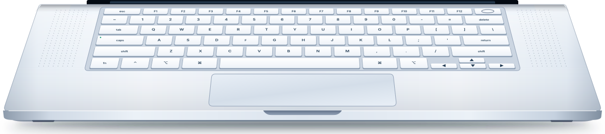

The Omics Hub: Bioinformatics & Computational Biology, Step by Step
Learn to work with biological data, from files and code to genomics and single-cell analysis. Start with the foundations, or choose a lesson for your research question.


A Clear Starting Point for Biological Data
Understand the question. Then choose the method.
Choose a lesson that fits your question and starting skills. Hands-on labs provide focused exercises; conceptual guides explain decisions; advanced templates need your inputs and adaptation; references help with formats, commands, and troubleshooting.
Build the foundations
Learn files, data formats, R or Python, quality control, and statistics before moving into a specialist analysis.
Practice with a clear goal
Check the lesson’s setup and inputs. Run the exercise or adapt the template, then inspect the outputs before using research data.
Read results critically
Ask what the result supports, which assumptions matter, and what remains uncertain before drawing a biological conclusion.
New to bioinformatics? Start Here helps you choose your first lesson.
Choose your first lesson →Choose Your Route
Explore the library
Browse 27 lessons across foundations, computing, single-cell analysis, spatial omics, and exome sequencing. Check the format and prerequisites: some exercises provide synthetic or public data, while templates need inputs you prepare yourself.
Foundations & Intro
Method orientation, R and Python coding, quality control, statistics, data visualization, and batch design.
8 tutorials →Shell, HPC & Workflows
Linux command-line navigation and text processing, Micromamba environments, SSH access, Slurm jobs, HPC troubleshooting, and Snakemake.
8 tutorials →Single-Cell RNA-seq
Count-matrix QC, clustering, Harmony integration, LISI evaluation, downstream analysis, and pseudobulk DESeq2.
5 tutorials →Multi-Omics, Spatial & WES
Cell-type annotation, publication R plots, inferCNV, CITE-seq WNN multi-omics, Visium spatial, and WES variants.
6 tutorials →Popular Starting Points
Featured lessons
These lessons have different starting points. Check the format, setup, and prerequisites before choosing one.

Computer and Data Fundamentals for Biologists
Hands-on lab: Build a bioinformatics project layout, inspect compressed FASTQ files, and practice checksum and file-integrity checks.
Read tutorial →
Micromamba Environments for Bioinformatics
Hands-on lab: Install Micromamba, create isolated environments, and practice recording and checking bioinformatics dependencies.
Read tutorial →
Writing Slurm Job Scripts
Hands-on lab: Write Slurm batch scripts for a cluster, request resources, direct logs, submit jobs, and monitor scheduler state.
Read tutorial →
scRNA-seq Basics
Hands-on lab: Start with a public PBMC 3k count matrix and work through QC, normalization, clustering, and UMAP using Seurat or Scanpy.
Read tutorial →
Spatial Transcriptomics in R and Python
Advanced template: Load Visium spots with tissue coordinates, normalize and cluster spatial features in Seurat and Squidpy, and check platform limits.
Read tutorial →Whole Exome Sequencing (WES): Variant Calling
Advanced template: Run paired exome read alignment, GATK variant calling and filtering, build liftover, and VAF depth quality checks.
Read tutorial →Why The Omics Hub
Learn with context, not just commands
Use the explanations, setup notes, and references to understand why a method fits your question and what you need to check yourself.
Learning Example: PBMC 3k QC and Clustering
Understand the data before choosing a cutoff.
The scRNA-seq Basics lab starts with a public PBMC 3k count matrix and presents Seurat and Scanpy examples for QC, normalization, clustering, and UMAP. It explains why gene-count and mitochondrial metrics need biological context. This is a focused matrix-to-clustering exercise, not a raw-read processing pipeline or a clinical validation workflow.
Explore the PBMC QC-to-clustering lab →Check examples in your environment
Where provided, use setup notes, expected outputs, and diagnostic checks to assess an example. Not every biological workflow has been run end to end; verify the relevant steps in your environment before applying them to research data.
A suggested study order
The Start Here page links the foundations to specialist topics. Use the suggested order as guidance and check each lesson’s prerequisites.
Built for Biologists
Written for biologists learning computational methods, with paired R and Python tabs where helpful. Begin with the foundations if command-line tools or coding are new to you.
Curriculum Standards & Scope
Frequently asked questions
How The Omics Hub structures computational biology lessons for reproducible research in R, Python, and HPC Linux environments.
How are R and Python covered across tutorials?
Core topics pair Seurat or Bioconductor R workflows alongside Scanpy, Squidpy, or standard-library Python equivalents so labs can adopt one coherent stack without translating concepts manually.
What data provenance guarantees apply?
Hands-on labs distinguish clearly between bundled public benchmarks (such as 10x PBMC matrices and Visium spatial datasets) and illustrative synthetic checks, with SHA-256 verification and explicit assumption boundaries.
Which cornerstone guides should I read next?
Explore scRNA-seq Integration QC, Visium Spatial Transcriptomics, Publication Visualization, inferCNV Copy Number, and Snakemake & Nextflow Workflows.
Choose your next lesson
Browse all 27 lessons by topic, suggested experience, and learning format. New to the field? Begin with Start Here.